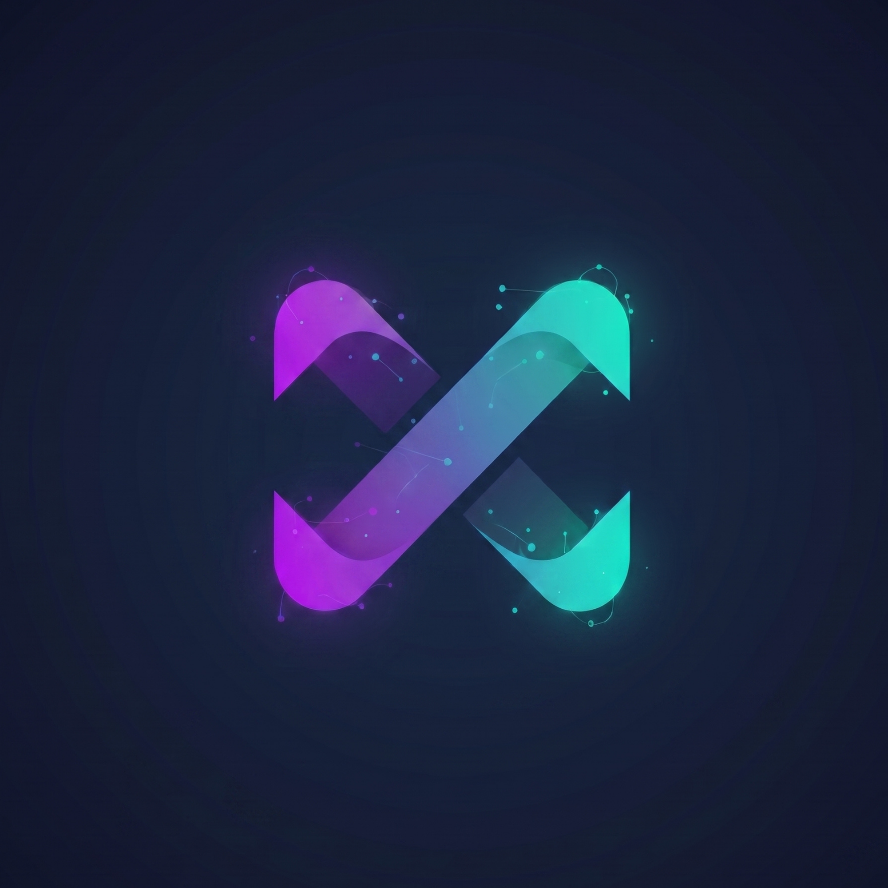

DOCKER
—
checking

NexoGate ORCHESTRATOR01 OPERATIONAL VIEW
Create, clone, and delete Windows instances from the base, monitor usage in real time, and transfer data between them.
checking
base + instances
—
02 FLEET
| Instance | Ports | CPU | RAM | Disk | Status | |
|---|---|---|---|---|---|---|
| Loading... | ||||||
04 ACTIVITY
01 DATA
Copy files from one instance's shared folder to another. Useful for migrating saves, configs, or payloads between copies.
Copies the files from this instance's shared folder.
01 GUIDE
The original instance (the box already installed and optimized) is the template. Each new instance is a copy of its disk (data.qcow2) — it comes with Windows, Steam, and the game ready to go. Only the AI key and the ports change.
Each instance gets its own ports on 127.0.0.1: the screen (noVNC) on 810X, RDP on 820X, and the MCP (AI) server on 830X. Open the screen with the monitor button in the table.
Live CPU and RAM come from docker stats; the disk is the real size of data.qcow2 (thin). The header shows the host total.
On the Transfer tab, copy files between the instances' shared folders — they appear as the \\host.lan\Data folder inside each Windows.
127.0.0.1.